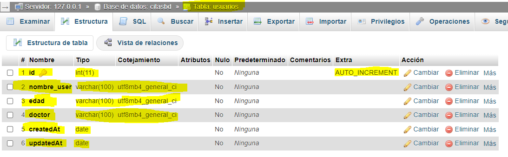
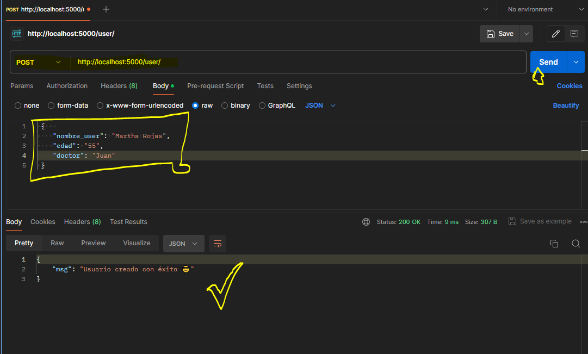
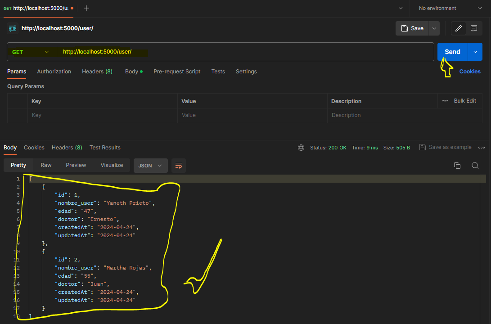
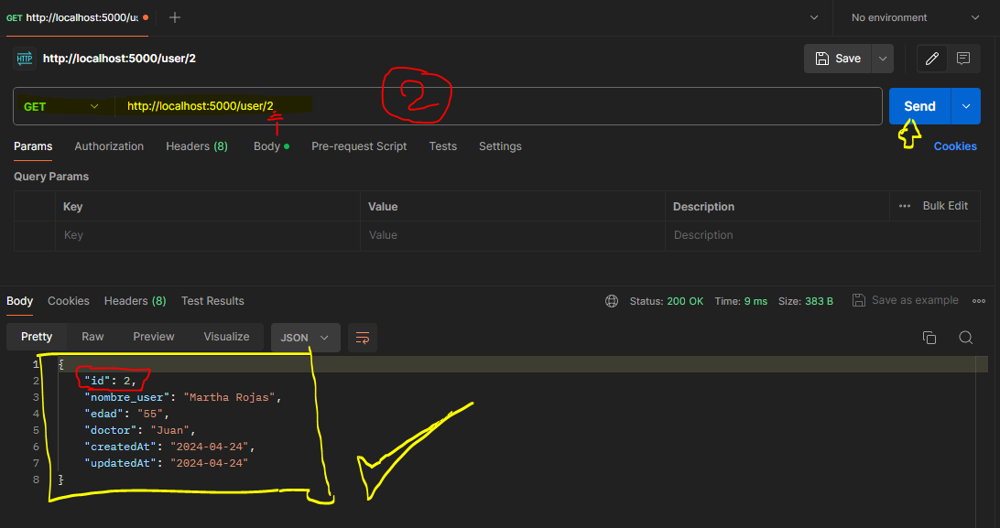
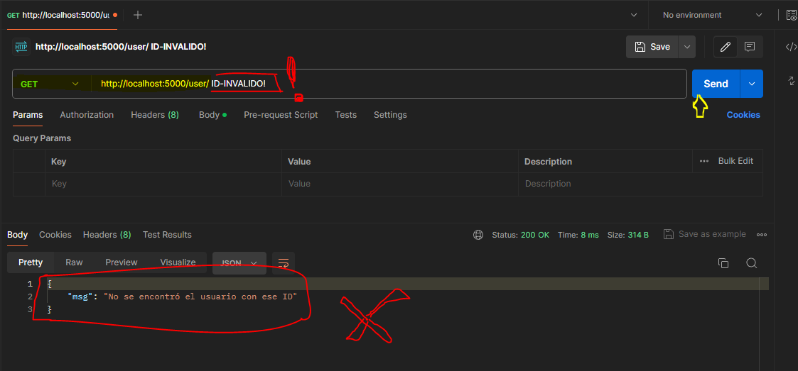
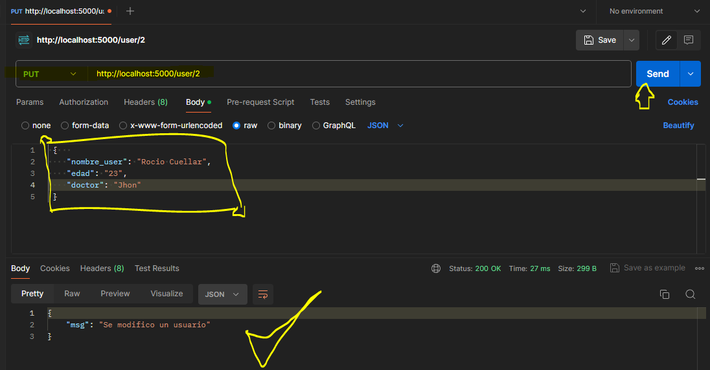
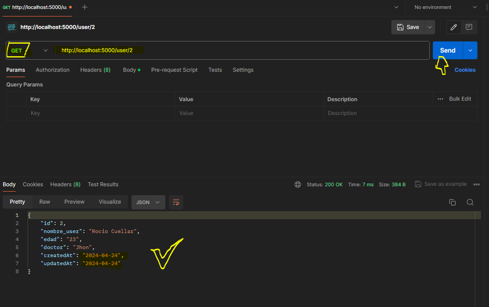
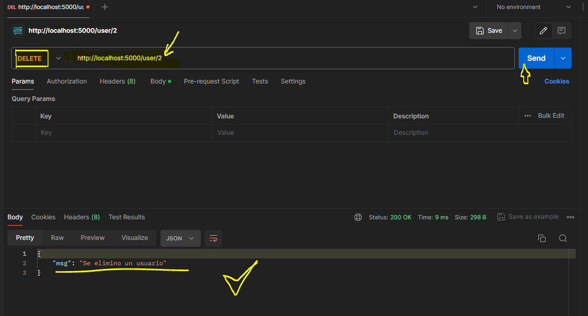
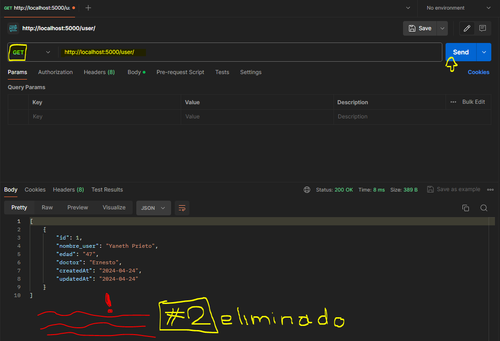

CRUD / Express y MySql - Parte 2
En esta sesión o entrega del dia, se da continuidad con las funciones o los métodos de nuestro CRUD con Express y MySql configuración que venimos trabajando en nuestro Controller/CitasController.js, recordando que en la anterior sesión ya habíamos iniciado con el método de ingresar nuevas citas. La nueva configuraron con los cambios de hoy quedaría de la siguiente forma:
Controller/CitasController.js
// Importamos el modelo
import Citas from '../model/Citas.js';
// Creamos los métodos CRUD
// Creamos una función para agregar citas
export const agregarCitas = async (req, res) => {
try {
await Citas.create(req.body)
res.json({msg: "Cita creada con éxito 😎"});
} catch (error) {
res.json ({msg: error.message});
}
}
// Sesión 29
// Función para mostrar todas las citas
export const getAllCitas = async (req, res) =>{
try {
const citas = await Citas.findAll();
res.json(citas);
} catch (error) {
res.json ({msg: error.message});
}
}
// Función para mostrar un sol cliente por ID
export const getCita = async (req, res) => {
try {
const cita = await Citas.findAll({
where:{id:req.params.id}
});
res.json(cita[0]);
} catch (error) {
res.json({msg: error.message})
}
}
// Función para modificar una cita
export const modificarCita = async (req, res) =>{
try {
await Citas.update(req.body, {
where:{id: req.params.id}
})
res.json({msg: "Se modifico una cita"})
} catch (error) {
res.json({msg: error.message})
}
}
// Función para eliminar una cita
export const eliminarCita = async (req, res) => {
try {
let citas = await Citas.findAll({where:{id: req.params.id}});
if (!citas[0]){
res.json({msg: "No se encuentra la cita"});
}
await citas[0].destroy();
res.json({msg: "Se elimino una cita"})
} catch (error) {
res.json({msg: error.message})
}
}
Ahora configuramos las rutas en routes/RoutesCitas.js
routes/RoutesCitas.js
// Importamos express
import express from 'express';
// Importamos nuestro controlador
import {agregarCitas} from '../controller/CitasController.js';
import {getAllCitas} from '../controller/CitasController.js';
import {getCita} from '../controller/CitasController.js';
import {modificarCita} from '../controller/CitasController.js';
import {eliminarCita} from '../controller/CitasController.js';
const router = express.Router();
router.post('/', agregarCitas);
router.get('/', getAllCitas);
router.get('/:id', getCita);
router.put('/:id', modificarCita);
router.delete('/:id', eliminarCita);
export default router;
Actividad - Añadiendo nuevo modulo a nuestro CRUD con MySql
Crearemos una nueva tabla llamada 'usuarios' donde se trabajaran las mismas funciones para ingresar, mostrar, eliminar y modificar datos de nuestra base de datos.
Ahora en nuestro proyecto crearemos 3 archivos nuevos, estos serán necesarios para que nuestro nuevo modulo para USUARIOS funcione correctamente:
Estructura de carpetas
↓ config
db.js
↓ controllers
CitasController.js
UsuariosController.js // New
↓ models
Citas.js
Usuarios.js // New
→ node_modules
↓ routes
RouterCitas.js
RouterUsuarios.js // New
↓ src
index.js
package-lock.json
package.json
Ahora en cuanto a la configuración de los archivos estos serian iguales a los anteriores usados para citas solo que aquí se le modificarían algunos nombres de variables y algunas rutas
controller/UsuariosController.js
// controller/UsuariosController.js
// Importamos el modelo
import Usuarios from '../model/Usuarios.js';
// Creamos los métodos CRUD
// Creamos una función para agregar usuarios
export const agregarUser = async (req, res) => {
try {
await Usuarios.create(req.body)
res.json({msg: "Usuario creado con éxito 😎"});
} catch (error) {
res.json ({msg: error.message});
}
}
// Función para mostrar todos lss usuarios
export const getAllUser = async (req, res) =>{
try {
const usuarios = await Usuarios.findAll();
return res.json(usuarios);
} catch (error) {
return res.json ({msg: error.message});
}
}
// Función para mostrar un usuario por ID
export const getUser = async (req, res) => {
try {
let user = await Usuarios.findAll({where:{id:req.params.id}});
if (!user[0]){
return res.json({msg: "No se encontró el usuario con ese ID"});
}
await res.json(user[0]);
} catch (error) {
return res.json({msg: error.message})
}
}
// Función para modificar un usuario
export const modificarUser = async (req, res) =>{
try {
let user = await Usuarios.update(req.body, { where:{id: req.params.id}})
if(!user[0]){
return res.json({msg: "El ID de usuario no es valido"})
}
await res.json({msg: "Se modifico un usuario"})
} catch (error) {
return res.json({msg: error.message})
}
}
// Función para eliminar un usuario
export const eliminarUser = async (req, res) => {
try {
let user = await Usuarios.findAll({where:{id: req.params.id}});
if (!user[0]){
res.json({msg: "No se encuentra el usuario para eliminar"});
}
await user[0].destroy();
res.json({msg: "Se elimino un usuario"})
} catch (error) {
res.json({msg: error.message})
}
}
model/Usuarios.js
// model/Usuarios.js
// Importamos la conexión a la BD
import BD from "../config/db.js";
import { DataTypes } from "sequelize";
const Usuarios = BD.define('usuarios', {
nombre_user :
{
type: DataTypes.STRING,
allowNull:false
},
edad :
{
type: DataTypes.STRING,
allowNull:false
},
doctor:
{
type: DataTypes.STRING,
allowNull:false
}
});
export default Usuarios;
routes/RoutesUsuarios.js
// routes/RoutesUsuarios.js
// Importamos express
import express from 'express';
// Importamos nuestros controladores para nuestro nuevo mod.
import {agregarUser} from '../controller/UsuariosController.js';
import {getAllUser} from '../controller/UsuariosController.js';
import {getUser} from '../controller/UsuariosController.js';
import {modificarUser} from '../controller/UsuariosController.js';
import {eliminarUser} from '../controller/UsuariosController.js';
// Definimos las rutas para nuestro nuevo mod.
const router = express.Router();
router.post('/', agregarUser);
router.get('/', getAllUser);
router.get('/:id', getUser);
router.put('/:id', modificarUser);
router.delete('/:id', eliminarUser)
export default router;
Y ya para finalizar con esta parte importamos las rutas de nuestro modulo a nuestro index.js, quedando éste, configurado de la siguiente manera:
src/index.js
// src/index.js
import express from "express";
import cors from "cors";
// Importamos la configuración de la BD
import BD from '../config/db.js';
// Importamos el archivo de las rutas
import citasRoutes from '../routes/RoutesCitas.js';
// Importamos el archivo de las rutas de nuestro nuevo mod.
import userRoutes from '../routes/RoutesUsuarios.js';
// Definimos la variable para trabajar con Express
const app = express();
app.use(cors());
app.use(express.json());
app.use('/citas', citasRoutes );
app.use('/user', userRoutes );
// Autenticación BD
try {
await BD.authenticate();
console.log('Conexión con la base de datos exitosa. Puedes sonreír 😎');
} catch (error) {
console.error('Unable to connect to the database:', error);
}
// Muestra mensaje en el navegador
app.get('/', (req, res) => {
res.send("Hola mundo");
})
// Configuración del puerto del servidor
app.listen(5000, () => {
console.log("El servidor esta corriendo ⚡ en http://localhost:5000/")
});
Probando funcionalidad de nuestro nuevo modulo de Usuarios
Vas a comprobar con Postam que nuestro nuevo modulo de Usuarios funciona de forma correcta, empezando con :
'agregarUser'

'getAllUser'

'getUser'

modificarUser

eliminarUser

Fin de la actividad y de nuestro CRUD CON EXPRESS Y MYSQL